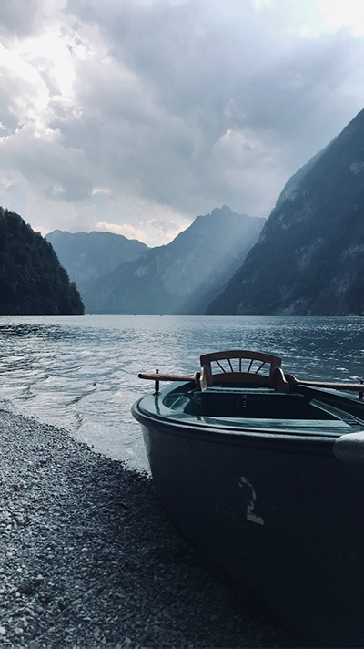

Mein Portfolio
Bisher habe ich bloß mit Procreate gearbeitet,
möchte aber noch andere Anwendungen kennenlernen wie:
- Adobe Photoshop
- Adobe InDesign
- Adobe After Effects
- Adobe Illustrator


Blumen sind das Lächeln der Erde.